Gallery
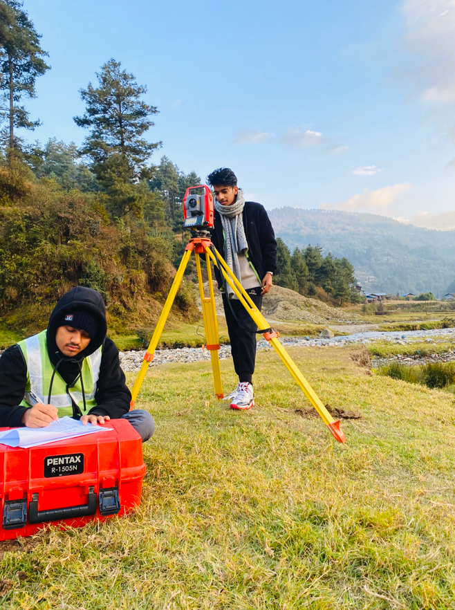
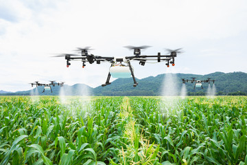
 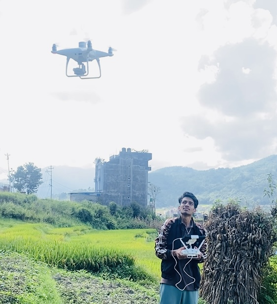
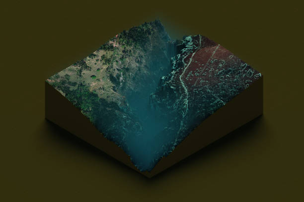
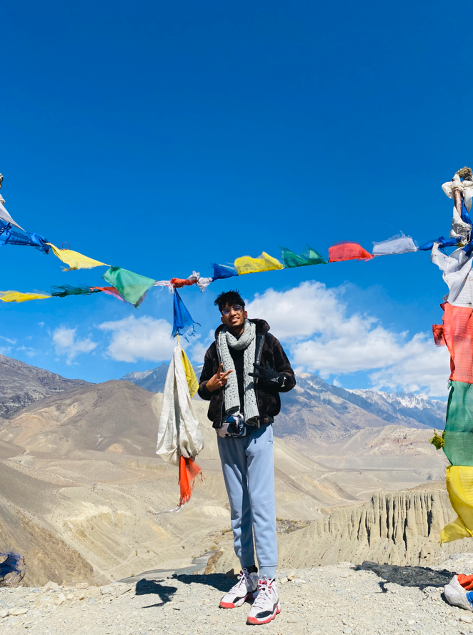
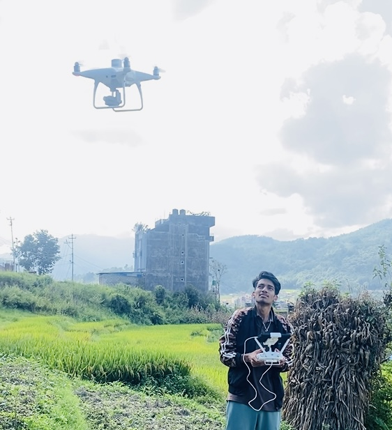
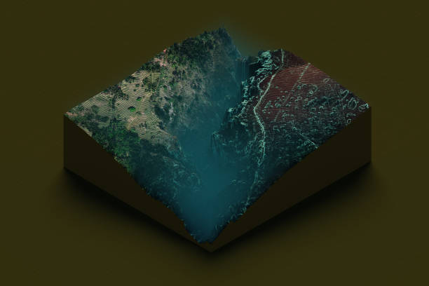
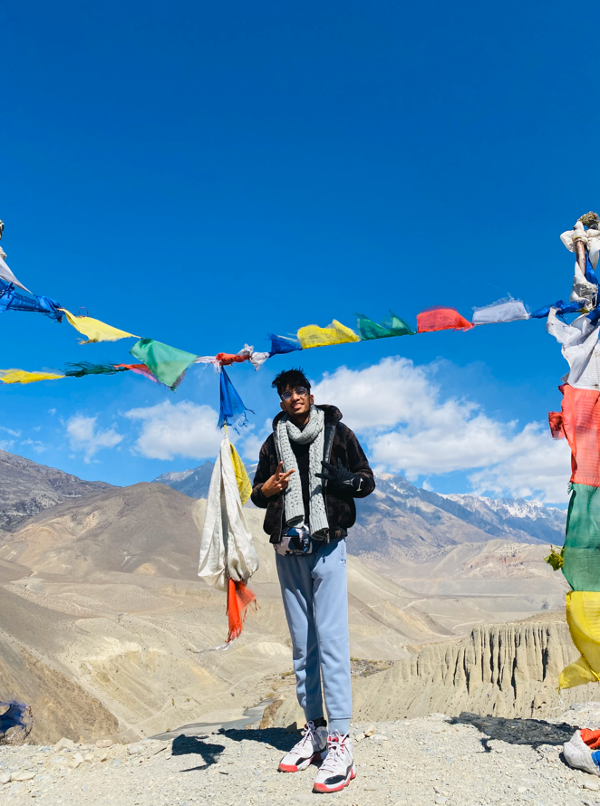
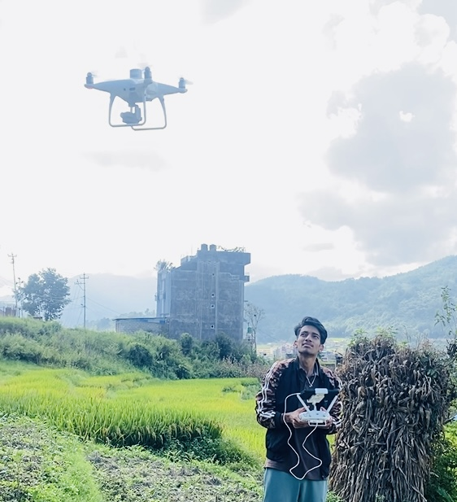
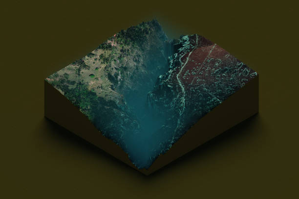
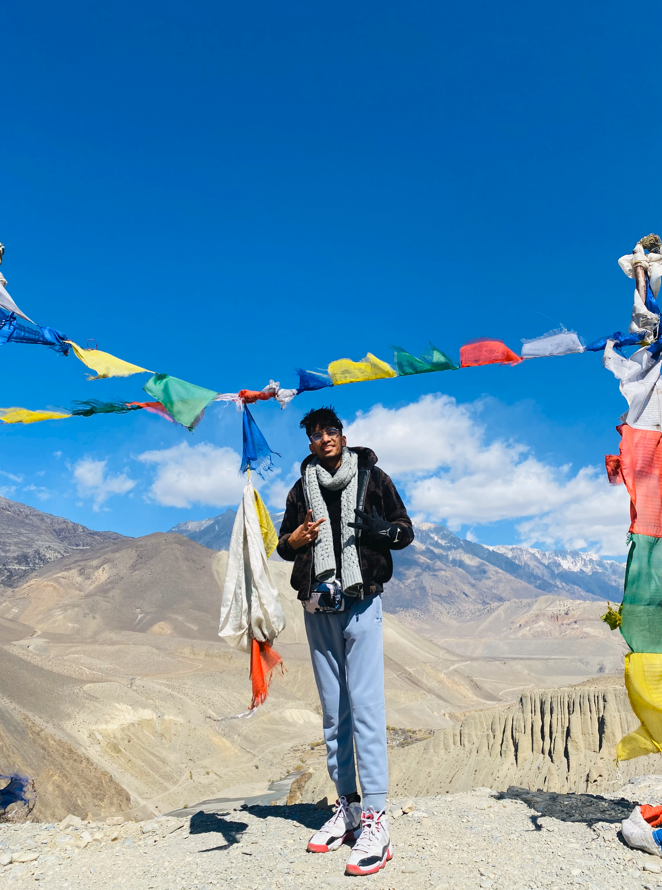
Geomatics Engineer & GIS Developer
Transforming data into maps, and maps into meaningful action.
Explore My WorkI am an innovative Geomatics Engineer with a comprehensive skill set in UAV-based remote sensing, topographic surveying, GIS development, and spatial data automation. My expertise spans the full geospatial workflow—from aerial data acquisition to advanced spatial analysis and decision support system development. I work with multispectral and RGB drone imagery for terrain modeling, land use classification, 3D reconstruction, and environmental monitoring, applying a broad range of remote sensing techniques.
I have hands-on experience conducting drone-based topographic and engineering surveys using GNSS and Total Station, particularly in hydropower alignment studies, road design, and infrastructure planning. Beyond fieldwork, I specialize in developing automated geospatial solutions using tools like Python, PostgreSQL/PostGIS, Google Earth Engine, and QGIS. My goal is to integrate surveying, remote sensing, and programming into efficient systems that support smarter decisions in agriculture, urban development, and sustainability.
Used UAV multispectral images and ground nitrogen status for yield estimation. Built CSM models to track vegetation height across six phases of data collection.
Spatio-temporal UHI study in Kathmandu using Landsat imagery in Google Earth Engine. Visualized change over 20 years using LST maps.
Topographic route survey for a hydropower project using GNSS and Total Station. Alignment planning based on terrain model and cross-sections.
Created optimal road alignments and profiles using elevation data and design constraints. Output included plan-profile sheets and cross-sections.
Built a shortest path navigation model for a city using PgRouting in PostgreSQL/PostGIS. Integrated with QGIS for visualization.
Performed land classification using slope, soil, LU/LC data with Analytical Hierarchy Process (AHP) method inside QGIS.
Terrain & plant health analysis ,3D modelling using multispectral and RGB drones.
Custom dashboards, mapping tools & spatial DB integration using PostGIS.
Hydropower, highway, and urban projects using GNSS & Total Station.
Used for spatial automation, frontend scripts, and GEE coding.
Ortho mosaic generation, vegetation index mapping, terrain modeling and preparing maps.
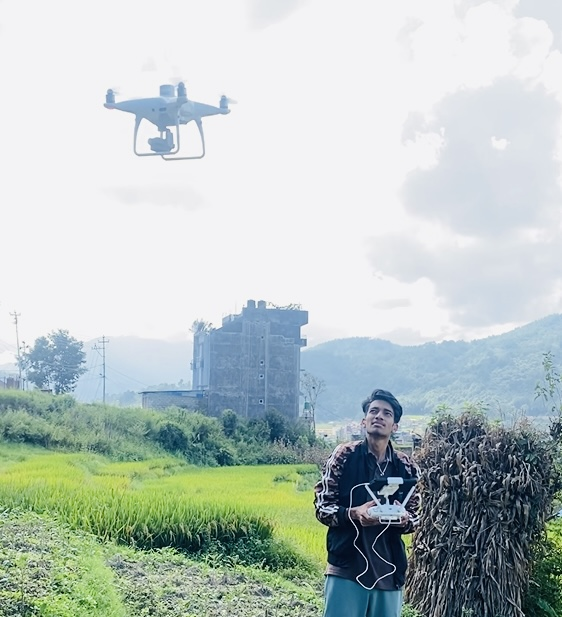
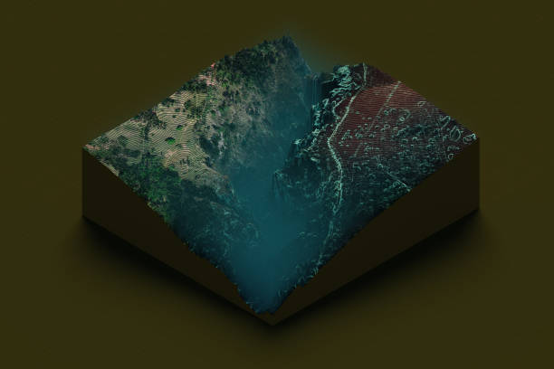
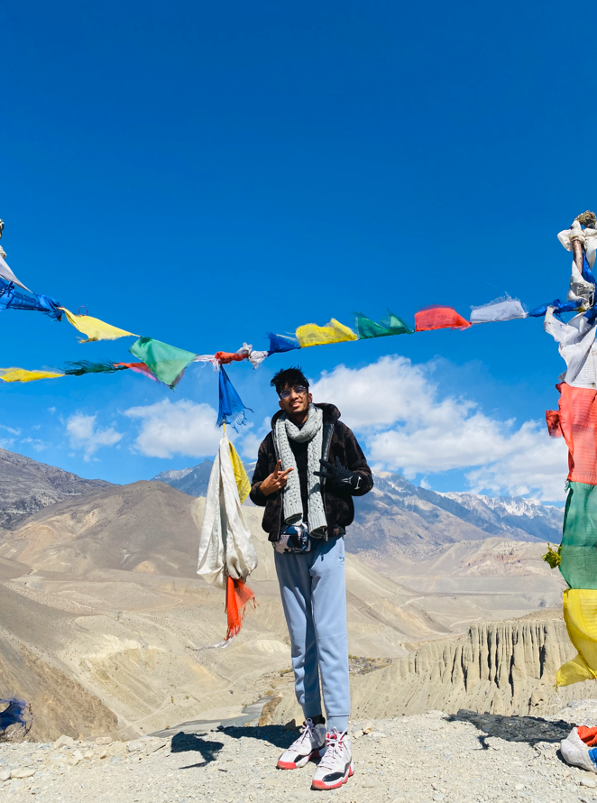
Email: prakashjoshi2078@gmail.com
Phone: +977 9863361664
LinkedIn: View Profile
Resume: Download PDF